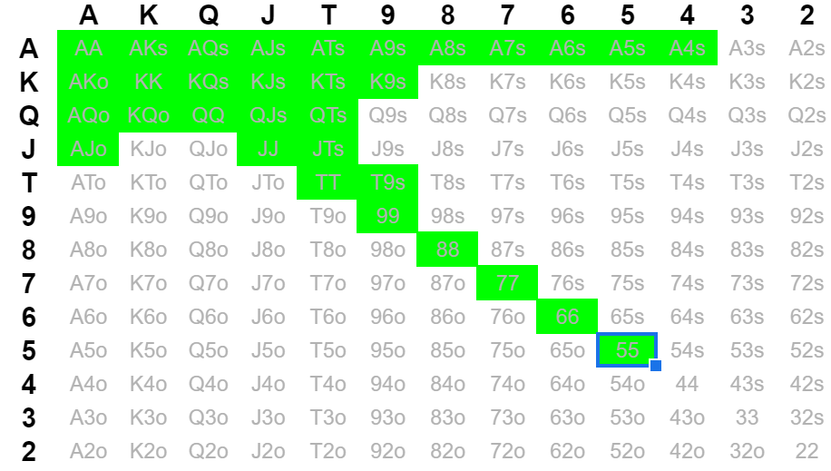

Importance of Understanding Ranges and using Charts
Preflop charts, while they can do harm if overused, are a great way to play against players you have limited/no information on. This is most players first step towards becoming profitable, and if you are playing micro stakes they will enable you to consistently win. However, it is important to constantly be thinking about other table conditions, along with others perception of yourself, along with the fact ranges change and adapt as stack sizes change. Each chart simply displays what you can open from each position, but is limited due to the fact people may open before you and 3-bet after you. Below, you can select which position you would like to see the Preflop Chart for Openraising.
UTG (Under the Gun)

UTG has the tightest range at the table as they have 8 players left to act behind, increasing the likelihood of 3-bets. There is no reason to ever expand this range, and this chart should become ingrained in your head. Only open these hands, any wider you will be leaking small amounts of money. Most people don't play this tight UTG, but it is counterintuitive not to.